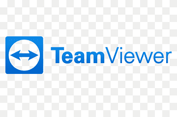
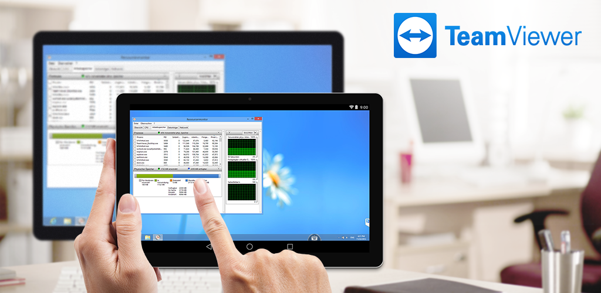
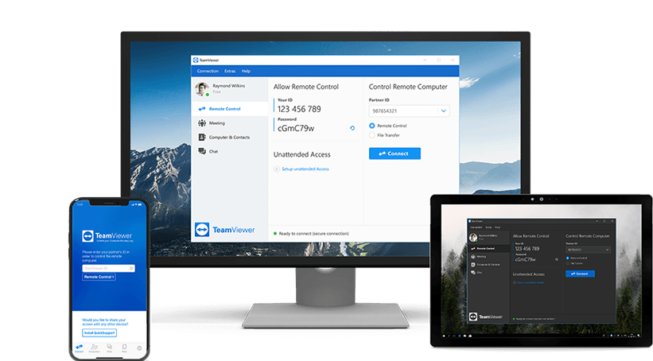

¿Qué es el Software de Soporte Remoto?
El software de soporte remoto es una herramienta que permite a los profesionales de TI y a los equipos de soporte acceder y controlar ordenadores o dispositivos de forma remota. Esta tecnología permite a los técnicos solucionar problemas, instalar software, gestionar actualizaciones y prestar asistencia sin estar físicamente presentes en la ubicación del dispositivo.
TeamViewer

TeamViewer es una herramienta de software de soporte remoto que proporciona una versión gratuita solo para uso personal. Para aquellos que buscan herramientas de acceso remoto exclusivamente para uso personal, esta es una buena opción que deben tener en cuenta. Sin embargo, si TeamViewer sospecha de que estás utilizando la versión gratuita para uso comercial, pueden bloquear tus conexiones e impedirte acceder a sus dispositivos remotos.
Asistencia remota
Control remoto de dispositivos
Toma el control. Vuélvete el usuario principal para solucionar problemas rápidamente. Controla una computadora, una tableta o un smartphone de forma remota desde tu propio dispositivo.

Pantalla compartida para ¡OS y ¡Pad
Mejora tu servicio de asistencia remota replicando las panyallas de ¡Phone y el ¡Pad en un dispositivo remoto

Sesiones de asistencia multiusuario
Invita a expertos adicionales a una sesion de asistencia remota para trabajar de forma colaborativa o traspasa la sesion por completo
Acceso multiplataforma
Ya sea que estés utilizando un equipo, un smartphone o una tableta, obtén acceso remoto a otros dispositivos a través de TeamViewer. Conéctate desde una PC a un móvil, desde un móvil a una PC o, incluso, desde un móvil a otro móvil